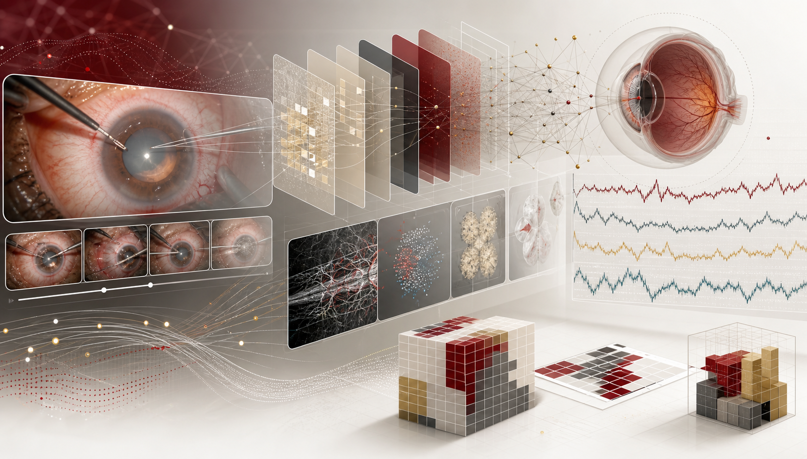

Research Intern
Sep 2026 - May 2027
Harvard Ophthalmology AI Lab, Massachusetts Eye and Ear / Harvard Medical School
Supervisor: Mohammad Eslami
AI for healthcare / optimization / scientific systems
Hi! I am a Computer Science PhD candidate at Worcester Polytechnic Institute. My research focuses on biomedical AI, ophthalmic surgical-video analysis, multimodal clinical decision support, and adaptive multi-agent optimization.
I am currently affiliated with the Harvard Ophthalmology AI Lab at Massachusetts Eye and Ear / Harvard Medical School, where I work with Mohammad Eslami on cataract-surgery video understanding and interactive report generation. I am also fortunate to work with mentors and collaborators including Chun-Kit Ngan, Rolf Bardeli, Samuel Miles, Fatemeh Emdad, and Bahman Moraffah.
I like building research systems that are accurate, useful, and auditable: models that can point to evidence, communicate uncertainty, and help experts reason through complex visual, clinical, and operational data.

Sep 2026 - May 2027
Harvard Ophthalmology AI Lab, Massachusetts Eye and Ear / Harvard Medical School
Supervisor: Mohammad Eslami
Jan 2025 - Present
Worcester Polytechnic Institute
Advisor: Chun-Kit Ngan; collaborator: Rolf Bardeli
Mar 2026 - Present
RISE Lab, Johns Hopkins University
Supervisor: Samuel Miles
Aug 2025 - Dec 2025
Findability Sciences
Advisors: Fatemeh Emdad, Chun-Kit Ngan, Bahman Moraffah
Jan 2025 - May 2026
thyssenkrupp Materials Services
Collaborators: Chun-Kit Ngan and Rolf Bardeli
Feb 2025 - Present
Worcester Polytechnic Institute
Graduate outreach, onboarding, campus tours, and virtual information sessions.
Massachusetts Eye and Ear / Harvard Medical School
Interactive surgical-video research system for timeline construction, report generation, grounded Q&A, uncertainty flags, and reviewer-facing export.
WPI / thyssenkrupp Materials Services
Adaptive optimization project for 1D, 2D, and 3D packing, connecting academic benchmark performance with industrial constraints.
Computing in Cardiology 2026
Decision-support research for cardiology triage with multimodal evidence, adaptive test selection, and explainable recommendations.
Johns Hopkins RISE Lab
Global-health infrastructure project studying electricity reliability, oxygen access, predictive modeling, and reproducible analysis workflows.
Findability Sciences / WPI Data Science GQP
Industrial sensor-optimization project reducing 150+ variables into interpretable control features and operating recommendations.
Decision-support prototype
Surgical guidance project for high-channel micro-ECoG streams, spatiotemporal feature analysis, and interactive GO/NO-GO review.
Selected public-facing research materials. Administrative, identity, immigration, financial, medical, and transcript records are not posted here.